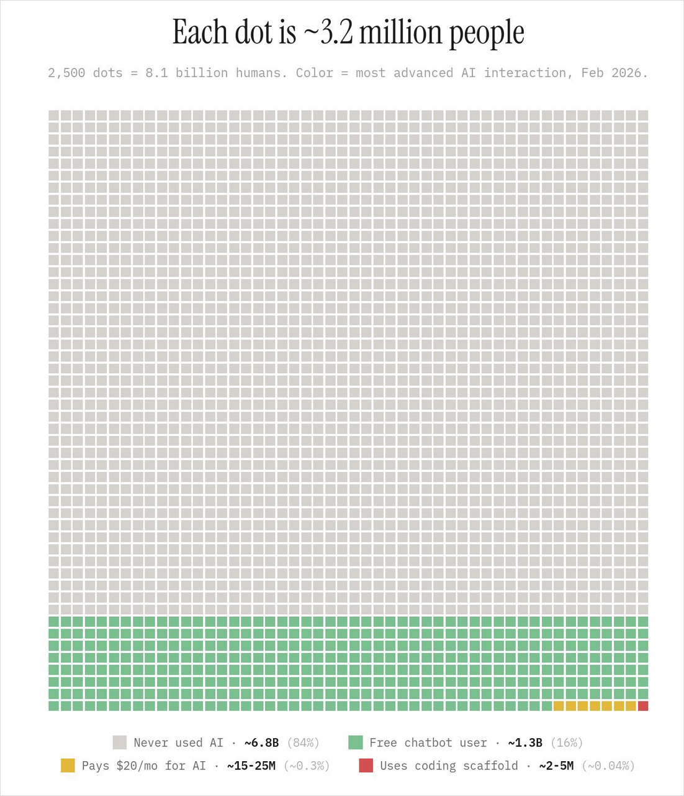

AI 時代的
「自他共喜」與
「人間革命」
分享者：黃志宏
梵亞行銷有限公司 總經理
2026.06.14 ─ 金弘笙講堂
「喜者，自他共喜也。」──《御書》─ 自他彼此皆幸福
這正是我這幾年在 AI 時代，最深刻的體會。
面對 AI 浪潮，我無比興奮！
信心是把「恐懼」轉化為「前進動力」的終極引擎。
「先接受、後挑戰」
擁抱未知，在實踐中尋找解答與突破。
「要向青年學習」
保持謙虛，傾聽時代前沿的聲音。
率先改變
不害怕改變，更要率先改變！
一個很現實的問題
「絕大部分中小企業的主管，對 AI 的認識還停留在新聞層面，自己沒真正用過。」
「這一場 AI 的革命，是老闆自己的革命。」
AI 革命本質上，是「生命的變革」
經營者若不在內心先完成這場革命，改變思維與習慣，就沒有能力去帶動組織的優化。
關鍵警示
「如果老闆的工作流程不能優化，那他也沒有能力去優化組織的工作流程。」
馬拉汽車的啟示
老闆不用 AI，強推員工用的代價：
- 1看不到 AI 的天花板，失去進化可能。
- 2不知道哪些業務流程真正值得改造。
- 3員工不敢用，深怕工作量加重或造成裁員。
向「國際級老師傅」學習
領軍 8 位實戰業師 (內含 4 位優秀創價青年)
穩定與臺中教育大學進修推廣部合作，配合勞動部青年轉職計畫，為台灣培育後繼競爭力，今年主辦並開設兩門熱門實戰大課：
- A AI 應用與社群行銷實務培訓班
- B Figma UI UX 設計與 AI 全端開發實戰班
教育與傳承的使命
「用實力與慈悲，
在社會的舞台上
培育廣布後繼！」
向「國際級老師傅」學習
企業全面智能化轉型與賦能
從思維革命到工作流程優化，成功協助企業導入 AI Agent 智能體以提升運營效能：
- 1 擔任總經理 AI 私人教練，規劃專屬學習歷程
- 2 協助將 AI 應用導入重要核心部門員工，優化整體運營流程
全方位數位與社群行銷統籌
建置全新網站、運營系統與社群行銷。用 AI 大幅擴張能力邊界，過去需要一整個團隊，現在：
全球 AI 使用分佈

看懂這張圖，你還需要焦慮嗎？
灰色：一輩子連碰都沒碰過 AI
綠色：只用過免費版的人
黃色：付費版用戶 (跨入頂尖世界)
紅色：善用工具的頂尖開發者 (uses coding scaffold)
「只要你願意起步，你就已經是先驅了！」
今天回家，做一件事
與 AI 討論一個你煩惱已久的決策
打開 ChatGPT 或 Claude，不是命令它做事，而是花 5 分鐘和它探討一件你一直沒想清楚的決策。
「你會發現，你公司的天花板、人生的天花板，比你想像的高很多。」
「自己幸福很容易，不算什麼。── 戶田城聖 第二代會長
要使他人也幸福，才是信心的真諦。」
AI 讓我成為事業上的「超級個體」
省下時間投入家訪、陪伴、守護會員
「喜者，自他共喜也。」
一生決不退轉，以信心為根本，
不斷創造勝利實證！
隨處遊戲無恙，遊行無畏如師子王。感謝大家！